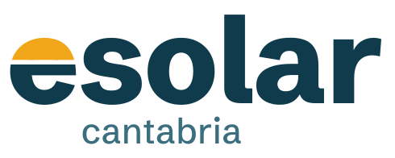
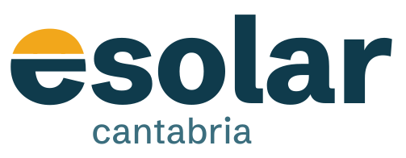
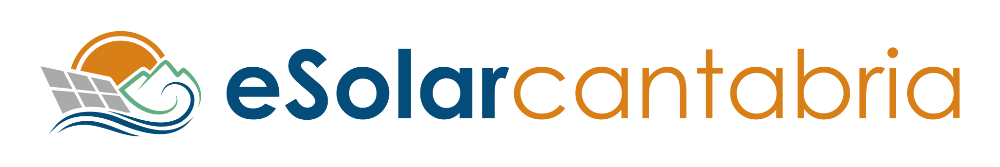

Dirección recomendada: «Sol del norte»
Una marca que suena a ingeniería seria y a parte del tiempo local, no a anuncio. Azul del Cantábrico para la confianza, el amarillo del sol solo donde importa: el símbolo, los datos de producción y el botón de pedir presupuesto.
Logotipo
La «e» de eSolar es un sol saliendo sobre el horizonte: todo lo que queda por encima de la barra es sol, la barra es el horizonte del Cantábrico y el resto de la letra, el mar. Ya no es un dibujo puesto delante de la palabra. Es la «e» auténtica de la tipografía, con el mismo grosor, el mismo contraste y el mismo remate que «solar», así que el conjunto se lee como una sola palabra. «Cantabria» va en minúsculas y en un tono más suave, porque la palabra que tiene que quedarse es «esolar».
Tres ajustes posibles del sol
Recomiendo la del centro: el horizonte blanco hace que el sol se lea como sol y no como una letra pintada a medias.
Sin horizonte: solo cambia el color

Con horizonte (recomendada)

«e» algo mayor: el sol asoma sobre las demás letras
La recomendada, en uso

Positivo, sobre fondos claros
Negativo, sobre azul Cantábrico


Icono de app, símbolo y favicon: se reconoce incluso a 16 píxeles

Logotipo actual, para comparar
Colores
Cantábrico#0F3B4C · titulares, cabecera y pie
Sol#F2A71B · símbolo, datos de producción y botón principal
Ría#3B6E7E · textos secundarios y enlaces
Prado#2F7D4F · solo para ahorro y cifras positivas
Bruma#EDF1F2 · fondos de bloques y calculadoras
Pizarra#1B2629 · texto de lectura
Todas las combinaciones de texto cumplen el contraste AA. El botón es azul sobre amarillo (5,9:1), no blanco sobre amarillo, que no se lee.
Tipografía
Titulares y cifras. Firme y con aire de periódico serio, sin ser fría. Es la misma letra del logotipo.
Atkinson Hyperlegible Next, para el texto. La diseñaron para lectores con baja visión: cada letra se distingue de las demás.
El cliente típico tiene entre 40 y 70 años y lee en el móvil. Esta letra se lo pone fácil sin parecer de hospital.
Cómo habla eSolar Cantabria
- De tú, directo y con números. «Con una factura de 90 € al mes, 8 placas cubren dos tercios de tu consumo.» Nada de «soluciones energéticas integrales».
- Cifras con fuente. Cada dato de producción, ayuda o ahorro dice de dónde sale. Eso es lo que da imagen profesional.
- Honesta con lo que es. eSolar Cantabria es una red de instaladores: lo dice claro. «Un instalador de la red cerca de ti», no «nuestros técnicos».
- Local sin postal. Nombra municipios, la galerna o el salitre de la costa cuando aporta algo, no para decorar.
Así se vería la portada
El elemento que se recuerda es el «parte solar»: eliges tu municipio y ves cuánto produce una placa allí, mes a mes. Todo lo demás, tranquilo.
En Cantabria hay sol de sobra para tus placas
Una placa en Santander produce un 15 % más que en Berlín. Te ponemos en contacto con un instalador de la red cerca de ti y te llega el presupuesto sin compromiso.
Un 15 % más que Berlín. Tu mes más flojo es diciembre.
Las cifras del selector son reales (PVGIS); el reparto por meses es el de Santander a escala. Prueba a cambiar de municipio.